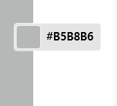
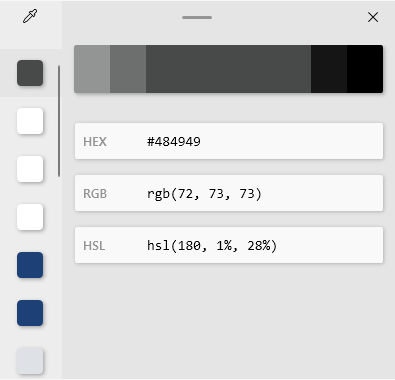

PowerToys-1. Color Picker.
PowerToys의 첫번째 기능은 Color Picker이다. PowerToys를 다운로드 한 후
Win
+
Shift
+
C
를 누르면 Color Picker가 활성화가 된다.

Color Picker는 내 마우스위치의 색상을 HEX, RGB, HSL 으로 바로 코드값을 보여준다. 특히 자주 색상을 추출하는 디자이 너들에게 유용할것이다.
